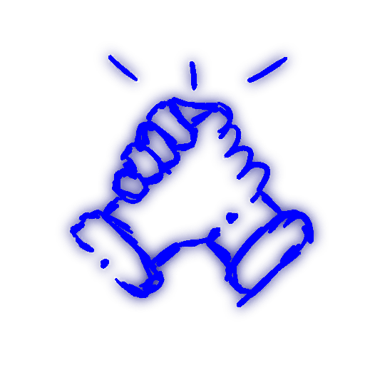
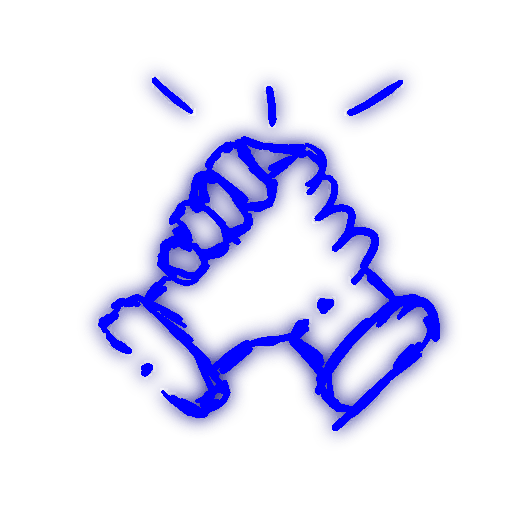

- Создание возможности влиться в комьюнити даже тех людей, у которых нет Телеграма.
- Создать удобный способ быстро и легко узнавать все новости, информацию и аналитику в одном месте. Не нужно запускать игру, чтобы увидеть территории. Не нужно тратить много времени, разбираясь в новостях мировой политики.
&sel
О сайте
О сайте
&sel
Новости
Новости
&sel
Политика
Политика
| Страна объект | Состояние | Страна субьект |
|---|---|---|
| Рития | Нордхайм | |
| Новгория | ||
| Иберия | ||
| Нордхайм | Рития | |
| Новгория | ||
| Иберия | ||
| Иберия | Нордхайм | |
| Новгория | ||
| Рития | ||
| Новгория | Нордхайм | |
| Рития | ||
| Иберия |
&war — Прекращение огня не ведется
Прекращение огня устанавливает избранная игроками власть. Оно устанавливается, чтобы войска страны случайно не атаковали союзника.
&sel
Полит.объекты
Полит.объекты
Статус: Расторгнут
Причина: Война
Цель: Развитие мирных отношений Ритии и Иберии. Кооперация для защиты от Нордхайма.
Текст/Договор: [Ожидает рассекречивания]
Статус: Действителен
Цель: Развитие мирных отношений Новгории и Иберии. Кооперация для защиты от Нордхайма.
Текст/Договор: [Засекречено]
Статус: Действителен
Цель: Развитие мирных отношений Нордхайма и Иберии. Не подтверждено: Подрыв внутрисоюзных отношений Альянса, нанесение удара по Ритии
Текст/Договор:
I. При нападении на Иберию Нордхайм обязан атаковать обидчика
Ост. пункты:[Засекречено]
Ост. пункты:
Статус: Уничтожен
Цель: Сдерживание, истощение и распил Нордхайма
Текст/Договор: [Засекречено]
Статус: Действителен
Цель: Развитие мирных отношений Новгории и Нордхайма. Предотвращение всемирных конфликтов.
Текст/Договор:
Новгория; Нордхайм - далее: вы, вашего; мы, наши.
Министр Иностранных Дел - далее МИД.
Министр Внутренних Дел - далее МВД.
Это наши и ваши границы, которые мы взаимно признаем (22 регион вы (Новгория) также признаете за Нордхаймом в случае его получения нами)
Вы не нападаете на Иберию
Мы не забираем у Ритии больше регионов, кроме 8-го
Член вашего парламента, некий "Кто-то "
Кто-то не будет участвовать в переговорах с нами, только в самых редких случаях, не чаще раза в месяц
Договор является действительным до момента его нарушения одной из сторон или взаимного расторжения
Подписали:
(Рассекречено членом власти Нордхайма)
Министр Иностранных Дел - далее МИД.
Министр Внутренних Дел - далее МВД.
Это наши и ваши границы, которые мы взаимно признаем (22 регион вы (Новгория) также признаете за Нордхаймом в случае его получения нами)
Вы не нападаете на Иберию
Мы не забираем у Ритии больше регионов, кроме 8-го
Член вашего парламента, некий "
Договор является действительным до момента его нарушения одной из сторон или взаимного расторжения
Подписали:
Представитель Нордхайма: @Ivan_always_winner
Член парламента Нордхайма: @Platual
МИД Нордхайма: @Vladislav3106IceFox
МВД Новгории: @syslyk
Член парламента Новгории: @PRONZATEL1
Член парламента Нордхайма: @Platual
МИД Нордхайма: @Vladislav3106IceFox
МВД Новгории: @syslyk
Член парламента Новгории: @PRONZATEL1
read-data